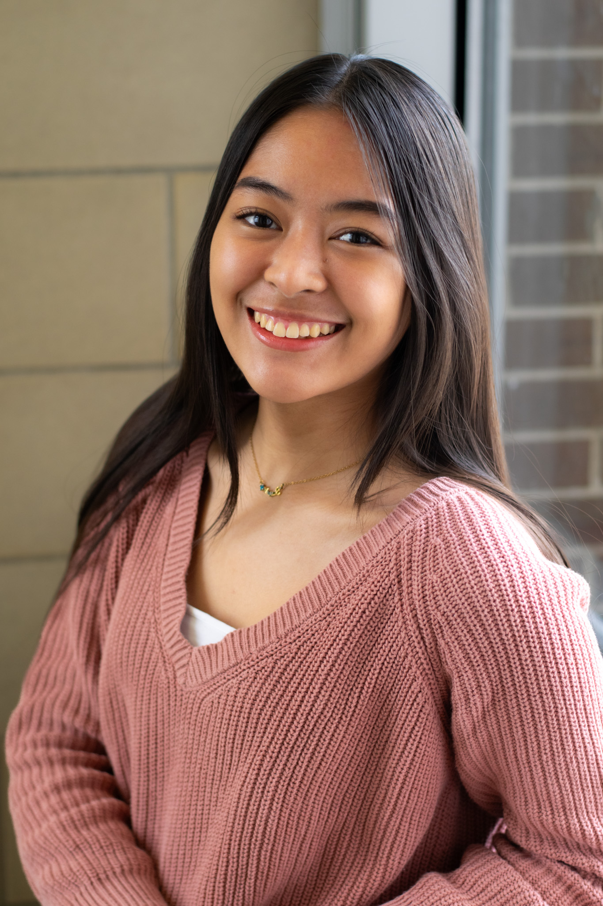

About me
Hello gorgeous people, I’m Chloee Sioco, I’m a first-year Graphic Design student at Algonquin College. My love for art has been with me my whole life— it feels like this passion is imprinted in me. Growing up, I enthusiastically join poster-making competitions for every special occasion during my elementary and high school days. Winning didn’t matter to me; I simply enjoyed the process of creating and expressing myself. This deep-rooted passion I have for art inspired me to pursue a career in design because I believe this is where I can excel, explore various creative things, and truly be myself. My journey as an artist is driven by curiosity and a desire to follow what I love most: creating meaningful and impactful art. That being said, I’m excited to continue to grow as a designer, connecting with others through art and finding fresh approaches to bringing art to life. Here are some facts about me: I’m from the Philippines, I’m an artist specializing in personalized art, and I love my cats and dogs.
The part of the lyrics that inspires me to keep me going:
"The struggles I'm facing. The chances I'm taking. Sometimes might knock me down, but No, I'm not breaking."– The Climb by Miley Cyrus
Skills
- Expressive and creative illustrator
- Traditional and Digital art
Graphic Design Courses
Favorite to Least favorite
Semester 1
- Grapic Design
- Concept sketching
- Computer Graphics
- Typography
- Colour Theory
- Communications
- Design Strategy
Semester 2
- Graphic Design
- Concept Sketching
- Computer Graphics
- Web Design
- Typography
- Communications fro Graphic Design